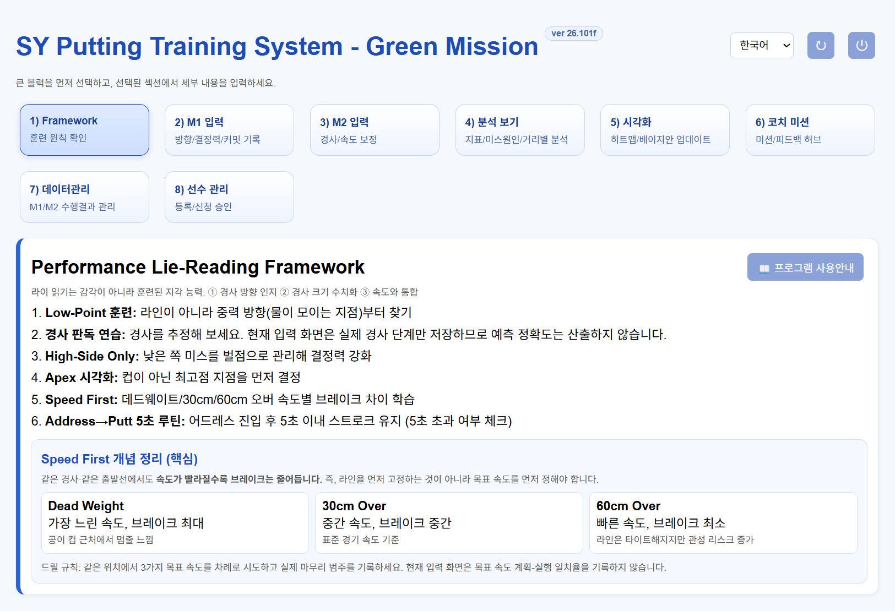
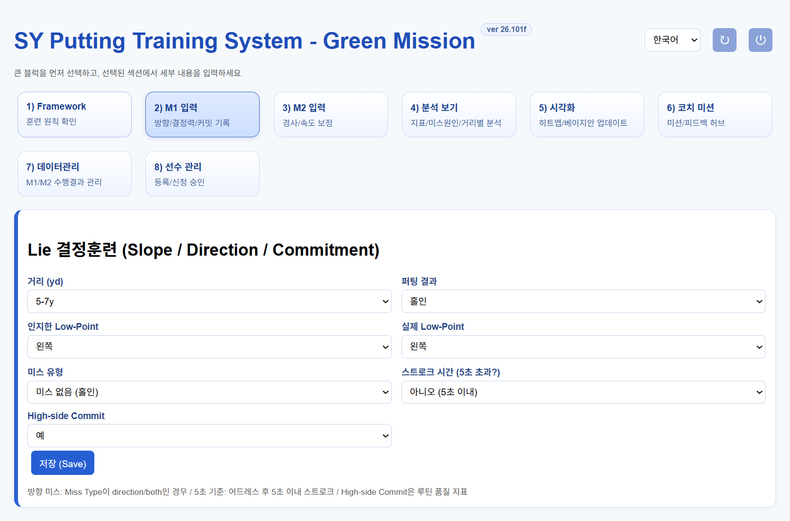
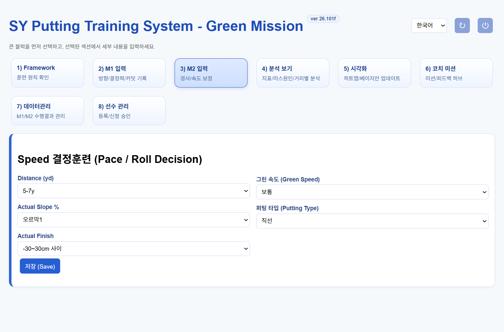
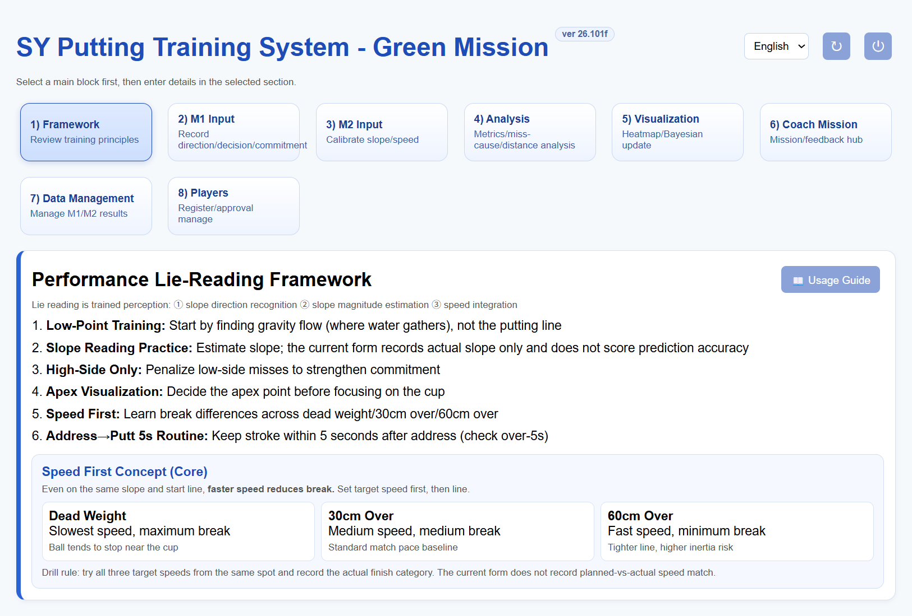
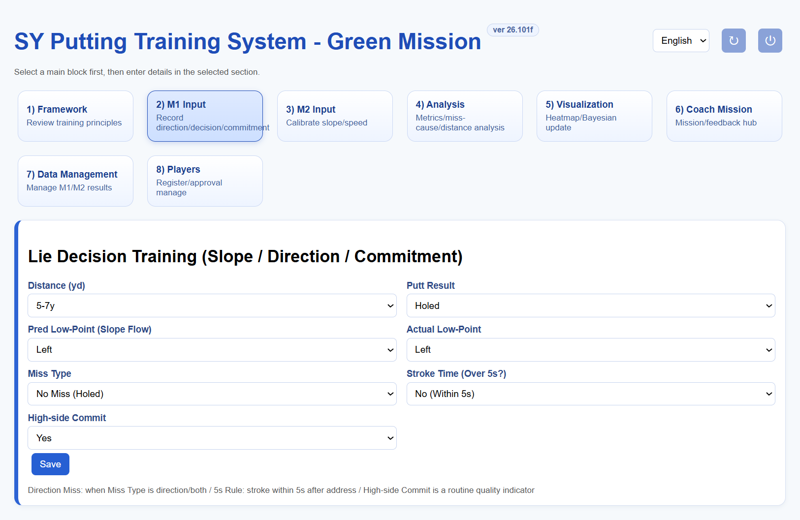
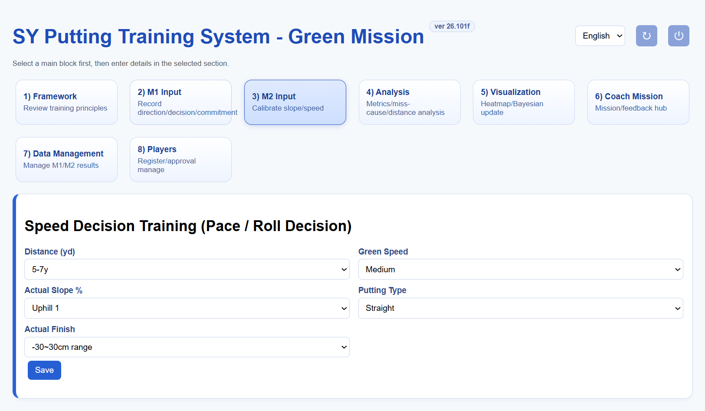

SY-PTS(SY Putting Training System - Green Mission)은 선수가 M1 라이·방향 판단 훈련과 M2 속도·마무리 훈련을 기록하고, 훈련 결과를 지표와 시각화로 확인하며, 코치와 미션·피드백을 주고받도록 구성된 웹 앱입니다.
사용 원칙 샷 결과와 판단을 가능한 한 실제에 맞게 입력하세요. 분석 지표는 입력한 기록의 품질에 좌우됩니다. 지표는 연습 기록을 돌아보기 위한 참고자료이며, 전문적인 코칭이나 실제 퍼팅 결과를 대신하지 않습니다.
화면 구성
메뉴
무엇을 하는 곳인가요?
1) Framework
Low-Point, 경사 흐름, High-side, 속도와 Address→Putt 루틴 훈련 원칙을 확인합니다.
2) M1 입력
거리, 결과, Low-Point 예측/실제, 미스 유형, 5초 응답과 High-side 커밋을 기록합니다.
3) M2 입력
거리, 그린 속도, 실제 경사, 퍼팅 타입과 실제 마무리 범주를 기록합니다.
4) 분석 보기
자동 지표, 미스 원인, 거리별 결과 및 PDF 보고서를 확인합니다.
5) 시각화
좌우 결과 히트맵, M2 마무리 편차 히트맵과 베이지안 홀인 추정치를 확인합니다.
6) 코치 미션
코치가 미션을 배포하고 선수와 결과·질문·피드백을 주고받습니다.
7) 데이터
코치는 CSV를 내보내거나 불러오고, 선수는 현재 세션의 M1/M2 결과를 코치에게 전송합니다.
8) 선수 관리
코치가 가입 신청을 승인하고 선수 계정·가입 코드를 관리합니다.
CHAPTER 01
접속과 역할
기존 계정으로 로그인
로그인 화면에서 선수 이름, 언어, 세션 날짜, 접속 역할(선수/지도자)을 선택합니다.
발급받은 패스코드를 입력하고 입장을 누릅니다.
인증에 실패하거나 잠금 안내가 표시되면 입력값을 확인하고, 잠시 기다린 뒤 다시 시도하거나 코치에게 문의합니다.
선수 자가 가입
선수 가입 탭에서 이름, 비밀번호, 비밀번호 확인, 코치가 안내한 가입 코드를 입력해 신청합니다. 신청 후에는 코치가 선수 관리에서 승인해야 로그인이 가능합니다. 비밀번호나 가입 코드를 다른 사람과 공유하지 마세요.
세션 날짜와 역할
로그인할 때 선택한 이름·날짜가 훈련 세션의 기준입니다. 날짜를 바꾸면 다른 세션 기록으로 구분됩니다.
선수는 훈련 기록과 코치에게 받은 미션을 이용합니다. 지도자는 배정된 선수 관리, 미션 배포와 데이터 검토 기능을 이용합니다.
상단 언어 선택에서 한국어/English를 바꿀 수 있습니다. 회전 화살표 버튼은 새 세션 시작, 전원 버튼은 로그아웃입니다.
계정 문제 승인 대기, 패스코드 분실, 가입 코드 오류는 코치에게 문의하세요. 앱의 관리자·선수 관리 기능은 역할에 따라 표시가 달라집니다.
CHAPTER 02
첫 사용과 훈련 순서

그림 1. 메인 화면 예시 — 개인정보를 표시하지 않은 앱 화면 캡처입니다. 로그인 역할에 따라 메뉴가 달라질 수 있으며, 선수에게는 코치 전용 기능이 숨겨지거나 비활성화됩니다.
메인 화면 버튼과 메뉴
버튼/영역
기능과 사용 방법
언어 선택
화면 문구를 한국어 또는 English로 전환합니다. 분석 도움말과 선수 관리 화면도 선택 언어에 맞춰 표시됩니다.
↻ 새로 시작
확인창에서 동의하면 현재 선수·세션 날짜에 저장된 훈련 기록을 삭제하고 해당 선수의 미저장 입력 초안도 지웁니다. 실행 후 되돌리기 어려우므로 반드시 선수·날짜를 확인하고 먼저 CSV로 백업하세요. 단순 화면 이동이나 폼 초기화 용도로 누르지 마세요.
⏻ 로그아웃
현재 계정에서 나와 접속 화면으로 돌아갑니다. 다른 역할 또는 선수로 로그인할 때 사용합니다.
1) Framework
Low-Point, 경사 방향과 크기, High-side, 속도 우선 개념과 Address→Putt 5초 루틴의 훈련 원칙을 확인합니다. 프로그램 사용안내 버튼을 누르면 M1/M2 및 코치 미션의 기본 절차가 펼쳐집니다.
2) M1 입력
퍼트 거리, 결과, 예측/실제 Low-Point, 미스 원인, 5초 이내 여부와 High-side 커밋을 한 샷 단위로 저장합니다. 상세 입력 방법은 M1 장을 참고하세요.
3) M2 입력
거리, 그린 속도, 실제 경사 단계, 퍼팅 타입과 홀 기준 마무리 범주를 한 번의 시도마다 저장합니다. 상세 입력 방법은 M2 장을 참고하세요.
4) 분석 보기
SRI/SII/DCS와 3단계 지표, 퍼팅 미스 분석, 미스 유형 및 M1/M2 거리별 표를 확인합니다. 각 지표 제목을 누르면 산출 의미를 볼 수 있고, 분석보기 PDF 다운로드로 해당 화면을 저장합니다.
5) 시각화
M1 좌우 결과 히트맵, M2 마무리 편차 히트맵, 베이지안 홀인 확률 추정치를 확인합니다. 제목을 누르면 차트 의미와 해석 주의사항을 볼 수 있고, 시각화 PDF 다운로드를 누르면 해당 화면을 PDF로 저장합니다.
6) 코치 미션
선수는 배정된 미션과 기한을 확인하고 수행 결과·질문·메모를 보냅니다. 코치는 대상 선수를 지정해 미션을 등록/배포하고 피드백을 관리합니다.
7) 데이터
선수 화면에서는 현재 세션의 M1/M2 기록을 코치에게 전송합니다. 코치 화면에서는 CSV 다운로드·불러오기 및 미션 결과 파일 관리를 할 수 있습니다.
8) 선수 관리(코치 전용)
가입 신청 승인/거절, 선수 직접 등록, 비밀번호 재설정·계정 삭제, 가입 코드 설정, 선수 전송 데이터 동기화를 관리합니다.
로그인 후 상단에서 선수 이름·날짜·역할이 맞는지 확인하고 Framework와 프로그램 사용안내를 읽습니다.
코치 지시에 맞춰 M1 또는 M2 메뉴를 엽니다. 두 종류의 훈련을 모두 했다면 각 퍼트를 알맞은 화면에 따로 기록합니다.
퍼트 직후 결과를 입력하고 저장을 누릅니다. 저장 확인 문구를 읽은 뒤 다음 샷으로 넘어갑니다.
코치는 분석 보기와 시각화에서 누적 결과를 확인합니다. 작은 표본은 확정 판단보다 추세 확인에 활용합니다.
미션이 배정됐다면 코치 미션에서 지시와 기한을 확인하고, 코치가 지정한 방식으로 결과를 공유합니다.
선택한 메뉴 카드는 이동할 화면을 표시하고, 현재 선택된 메뉴는 강조색으로 표시됩니다. 선수 계정에는 코치 전용 메뉴나 관리 동작이 표시되지 않을 수 있습니다. 전송·클라우드 동기화는 네트워크 연결이 필요합니다.
저장을 누른 뒤 입력 칸은 다음 샷을 위해 기본값으로 돌아옵니다. 직전 저장 확인 문구를 보고 중복 입력을 피하세요. 새로 시작, CSV 덮어쓰기 등 기존 기록에 영향을 줄 수 있는 작업 전에는 백업 여부를 확인합니다.
CHAPTER 03
M1 라이·방향 판단 기록
M1은 한 번의 퍼트에 대해 라이 판단과 결과 원인을 기록하는 훈련입니다. 실제 연습 절차와 코치 지시를 우선하고, 모든 항목은 해당 샷의 결과를 반영해 선택합니다.

그림 2. M1 입력 화면 — 실제 앱 화면의 기본 선택 예시입니다. 매 샷의 실제 관찰값으로 다시 선택한 뒤 저장하세요.
항목
언제/무엇을 입력하나요?
선택 기준
거리 (yd)
퍼트를 입력하기 전에 해당 시도의 거리를 선택합니다.
5y 이내, 5–7y, 7–9y, 9–11y, 11y 이상 중 하나입니다. 정확한 개별 야드 측정값이 아니라 분석용 거리 범주입니다.
퍼팅 결과
공이 멈춘 직후 실제 결과를 기록합니다.
홀인, 좌측 미스, 우측 미스 중 선택합니다. 결과 방향을 추측하지 말고 실제 결과로 선택합니다.
인지한 Low-Point
스트로크하기 전에 읽은 경사 흐름/낮은 지점의 방향을 기록합니다.
왼쪽, 오른쪽, 평지 중 선택합니다. 이는 퍼트 방향이나 공의 정지 위치가 아니라 경사 판독 훈련에서 정한 Low-Point 방향입니다.
실제 Low-Point
퍼트 후 훈련 기준으로 확인한 실제 방향을 입력합니다.
왼쪽, 오른쪽, 평지 중 선택합니다. 인지한 값과 대조할 기준값입니다. 앱은 실제 경사를 자동 측정하지 않으므로 코치/훈련 기준에 따라 확인합니다.
미스 유형
미스가 난 경우 결과의 원인을 분류합니다.
방향 미스, 속도 미스, 방향+속도 미스 중 선택합니다. 홀인은 저장 시 “미스 없음”으로 처리됩니다. 미스 결과인데 “미스 없음”이면 저장되지 않으며 유형을 선택하라는 안내가 표시됩니다.
스트로크 시간 (5초 초과?)
어드레스에 들어간 뒤 스트로크까지의 시간을 회상해 입력합니다.
아니오 = 5초 이내, 예 = 5초 초과입니다. 초 단위 타이머 측정값을 입력하는 기능은 아닙니다.
High-side Commit
해당 퍼트에서 코치가 지도한 High-side 라인에 커밋했는지 기록합니다.
예/아니오 중 선택합니다. 앱은 영상으로 커밋이나 실제 라인을 판정하지 않으며, 사용자의 자기보고입니다.
저장 (Save)
필드를 검토한 뒤 샷 한 번마다 한 번 누릅니다.
성공하면 점수/저장 메시지가 나타나고 입력값은 다음 기록을 위해 기본값으로 돌아갑니다. 다음 샷 전에 거리를 포함한 항목을 다시 확인하세요.
퍼트 전: 코치 지시에 따라 거리 구간을 선택하고 경사를 읽습니다. 본인이 판단한 Low-Point를 기록한 뒤 스트로크합니다.
퍼트 직후: 홀인/좌측/우측 결과를 입력하고, 미스라면 방향·속도·복합 중 원인을 선택합니다. 홀인은 미스 원인이 필요하지 않습니다.
확인 후: 훈련 기준으로 실제 Low-Point를 기록하고, 어드레스 후 5초 이내 여부와 High-side 커밋을 응답합니다.
저장 전 검토: 모든 항목이 같은 한 번의 퍼트를 설명하는지 확인하고 저장 (Save)을 한 번 누릅니다. 저장 결과를 확인한 후 다음 샷을 입력합니다.
M1 점수 참고: 홀인은 10점, 속도 미스로 분류된 미스는 5점, 방향 미스 또는 방향+속도 미스는 0점입니다. 이 점수는 입력된 미스 유형을 사용하므로 분류를 정확히 해야 합니다.
코치에게 기록 제출: M1에서 저장을 눌러도 기록은 현재 선수/날짜 세션에 저장될 뿐, 코치의 전송 데이터 목록으로 제출되지는 않습니다. 코치에게 M1/M2 세션 기록을 보내려면 저장을 마친 뒤 7) 데이터 관리 → 전송을 별도로 누르고 완료 안내를 확인하세요. 코치는 8) 선수 관리 → 전송된 선수 데이터 → 최신 데이터 동기화를 눌러 받습니다.
수집하지 않는 항목: 현재 M1 화면은 좌우 오차(cm), 실제 출발선 일치 여부, Apex 커밋을 직접 입력하지 않습니다. Low-Point 실제값과 미스 유형도 사용자가 지정하며 영상 분석으로 자동 판정되지 않습니다.
CHAPTER 04
M2 속도·마무리 기록
M2는 실제 퍼트 후 공이 홀을 기준으로 어디에서 멈췄는지 범주형으로 기록합니다. 목표한 속도 계획과 실제 마무리의 차이를 정밀 측정하는 화면은 아닙니다.

그림 3. M2 입력 화면 — 실제 앱 화면의 기본 선택 예시입니다. Actual Finish는 각 퍼트가 홀보다 얼마나 지나가거나 짧았는지 관찰해 선택합니다.
항목
언제/무엇을 입력하나요?
선택 기준
거리 (yd)
해당 퍼트의 거리 구간을 선택합니다.
5y 이내, 5–7y, 7–9y, 9–11y, 11y 이상입니다. 거리별 분석표와 히트맵에서 사용하는 동일한 범주입니다.
그린 속도
훈련 시점의 그린 상태를 선택합니다.
매우 느림, 느림, 보통, 빠름, 매우 빠름 중 코치가 정한 기준을 일관되게 사용합니다. 장비로 측정한 Stimpmeter 값을 입력하는 필드는 아닙니다.
Actual Slope %
실제 경사 방향과 훈련 단계에 맞는 항목을 선택합니다.
오르막 1/2/3, 평지, 내리막 1/2/3 중 하나입니다. 실제 퍼센트 수치를 직접 입력하는 필드가 아니며 경사 예측 정확도를 평가하지 않습니다.
퍼팅 타입
퍼트의 경로/브레이크 유형을 선택합니다.
직선, 브레이크 왼쪽, 브레이크 오른쪽 중 선택합니다. 코치의 훈련 정의에 맞춰 방향 기준을 일정하게 적용하세요.
Actual Finish
퍼트가 끝난 뒤 홀을 기준으로 공이 멈춘 위치를 선택합니다.
1m 이상 오버(+100), 30cm 이상 오버(+30), -30~+30cm 범위(0), 30cm 이상 짧음(-30), 1m 이상 짧음(-100) 중 실제 범주를 선택합니다.
저장 (Save)
다섯 항목이 해당 시도에 맞는지 확인한 뒤 한 번 누릅니다.
성공 메시지에 그린 속도, 타입, 마무리와 점수가 나타납니다. 저장 후 폼은 기본값으로 돌아가므로 다음 샷 값을 다시 설정합니다.
퍼트 전: 코치가 지정한 거리, 그린 속도, 경사 단계와 퍼팅 타입을 선택합니다.
퍼트 후: 공이 홀보다 지나갔는지 또는 짧았는지 확인하고, 다섯 가지 Actual Finish 범주 중 가장 알맞은 것을 선택합니다.
저장 전 검토: 선택한 거리·환경 조건과 마무리가 같은 한 번의 시도를 설명하는지 확인하고 저장 (Save)을 누릅니다.
결과 확인: 성공 알림의 점수와 누적 평균을 확인하고 다음 시도에 맞춰 입력값을 다시 선택합니다.
마무리 점수는 범주값의 절대 크기로 정해집니다. 0은 10점, ±30은 7점, ±100은 3점이며, 오버/쇼트의 부호와 무관하게 같은 절대 범주에는 같은 점수가 부여됩니다. 누적 평균은 해당 세션의 M2 점수 평균입니다.
코치에게 기록 제출: M2에서 저장을 눌러도 기록은 현재 선수/날짜 세션에 저장될 뿐, 코치의 전송 데이터 목록으로 제출되지는 않습니다. M1/M2 기록을 공유하려면 두 입력을 마친 후 7) 데이터 관리 → 전송을 별도로 누르고 완료 안내를 확인하세요. 코치는 8) 선수 관리 → 전송된 선수 데이터 → 최신 데이터 동기화를 눌러 받습니다.
측정 범위: 화면의 “cm”와 평균 편차는 실제 거리 측정값이 아니라 선택 범주의 대표값(0/30/100cm)입니다. 현재 화면은 예측 속도, Speed Plan, Actual Pace를 입력하지 않으므로 속도 계획-실행 일치율이나 예측 경사 오차를 산출하지 않습니다.
CHAPTER 05
분석 지표의 의미
분석 보기에서 지표 제목을 누르면 정의와 산출 기준을 펼쳐 볼 수 있습니다. 퍼팅 미스 분석의 개별 지표 제목도 클릭할 수 있습니다. 데이터가 부족한 항목은 N/A로 표시될 수 있습니다.
지표
쉽게 이해하기
SRI
M2 마무리 결과 지표입니다. 적정 마무리 비율 70%와 범주 편차를 점수화한 값 30%를 합산합니다. 경사 판독 지표가 아닙니다.
SII
M1에서 방향/복합 미스로 분류되지 않은 비율, 미스 중 방향 관련 미스 비율, 실전형 미스 원인 점수를 합산한 방향·Low-side 지표입니다. 방향 정확도를 직접 측정하지는 않습니다.
DCS
M1 홀인율, 전체 시도 대비 속도 관련 미스, Stage 3 루틴 점수를 합산합니다. 거리 정규화 좌우 오차는 포함하지 않습니다.
적정 마무리
유효 M2 중 마무리 범주가 −30~+30cm 범위인 비율입니다.
평균 마무리 편차(범주환산)
0/30/100cm 범주 대표값의 절대값 평균입니다. 정확한 센티미터 측정 결과가 아닙니다.
Stage 1 · 중력 인지
유효 Low-Point 예측 일치율 60%와 실전형 미스 원인 점수 40%를 반영합니다.
Stage 2 · 마무리 제어
SRI와 같은 점수입니다. M2 적정 마무리 비율 70%와 범주 편차 보정 점수 30%를 사용합니다.
데이터가 존재하는 Stage 1·2·3 점수의 산술평균입니다. SII와 DCS는 이 평균에 포함하지 않습니다.
퍼팅 미스 분석 보조 지표
전체 미스율: M1 중 홀인(center)이 아닌 기록의 비율입니다.
Low-Point 정확도: 예측·실제 Low-Point가 모두 입력된 기록에서 두 값이 일치한 비율입니다.
미스 시 Low-Point 불일치: 미스 중 양쪽 Low-Point 입력이 있는 표본에서 값이 다른 비율입니다.
결과기반 Low-side: 좌/우 미스와 좌/우 예측 Low-Point가 있는 샷 중 미스 방향이 예측 Low-Point와 같은 비율입니다.
방향/속도 관련 미스: 미스 중 Miss Type에 해당 원인이 포함된 비율입니다. 복합 미스는 방향 및 속도 두 항목 모두에 포함됩니다.
미스원인가중치: Low-Point 일치(30%), 방향 미스 억제(35%), 속도 미스 억제(20%), High-side 커밋(15%)을 합산한 점수입니다.
5초 이내: 5초 질문에 유효 응답한 M1 중 “아니오(5초 이내)”인 비율입니다.
확신 유지: 유효 High-side 응답 중 Yes 비율입니다. Apex 커밋은 현재 입력되지 않습니다.
표본과 해석: 각 지표는 필요한 항목이 입력된 표본만 분모로 쓰는 경우가 있습니다. 표본 수를 함께 확인하세요. SII, DCS 및 미스 원인 점수는 규칙 기반 요약 지표로, 확률이나 객관적 장비 측정값을 뜻하지 않습니다.
CHAPTER 06
분석·시각화·PDF
분석 보기
퍼팅 미스 분석: 전체 미스, Low-Point, Low-side, 원인 분류와 루틴 지표를 확인합니다. 제목을 눌러 정의를 펼칩니다.
미스 유형 분석: Direction, Speed, Direction+Speed 유형을 M1 미스 중 건수와 비율로 표시합니다.
Lie 결정훈련 거리별 분석: 5y 이내, 5–7y, 7–9y, 9–11y, 11y 이상 범주별 시도, 홀인, 방향 분류 결과를 비교합니다. 정확한 개별 야드 값이 아닌 입력된 거리 구간을 기준으로 집계합니다.
Speed 결정훈련 거리별 분석: 거리, 그린 속도, 퍼팅 타입별로 적정 범위·오버·쇼트 비율을 표시합니다. 유효 M2 마무리 기록을 기준으로 계산합니다.
시각화
Left / Right Error Heatmap: M1 거리 범주(5y 이내, 5–7y, 7–9y, 9–11y, 11y 이상)에 따른 좌측/홀인/우측 결과 분포를 볼 수 있습니다. 영상이나 공의 정확한 편차를 측정하는 기능은 아닙니다.
Finish Offset Heatmap (M2): 거리와 실제 경사 단계별 범주 기반 절대 마무리 편차 평균입니다. 실제 거리 측정값이 아닙니다.
Bayesian Skill Update: M1 홀인/미스 기록으로 Beta(1,1) 사전분포를 갱신해 홀인 확률 평균과 구간을 표시합니다. 표본이 적을 때는 불확실성이 큽니다.
분석 섹션의 분석보기 PDF 다운로드, 시각화 섹션의 시각화 PDF 다운로드를 누르면 해당 화면을 캡처해 A4 PDF 파일을 직접 생성하고 다운로드합니다. 외부 PDF 라이브러리를 불러오지 못하거나 캡처/생성에 실패하면 화면에 오류 안내가 표시됩니다. 이 버튼은 브라우저 인쇄 창을 여는 기능이 아닙니다.
CHAPTER 07
코치 미션과 선수 관리
6) 코치 미션은 훈련 과제를 배정하고, 과제별 수행 결과·질문·피드백을 주고받는 공간입니다. 미션 대화/수행 결과는 M1/M2 샷 기록과 별도로 저장되므로, 코치가 두 종류 모두 요청했다면 각 메뉴에 각각 입력하세요.
선수: 배정 미션 확인 및 결과 제출
수행미션 목록을 확인합니다. 목록이 비어 있거나 최신 배정이 보이지 않으면 미션 진행상황 동기화를 눌러 다시 확인합니다. 날짜 선택이 표시되면 해당 미션이 배정된 날짜를 선택합니다.
미션 카드를 열어 내용을 읽습니다. 카드 제목을 눌러 펼친 뒤 미션 지시와 원본 수행 양식을 확인합니다. 기한과 배정일도 확인하고, 필요한 경우 코치에게 질문한 다음 시작합니다.
훈련 결과를 기록합니다. 카드 안에 수행결과기록양식이 있으면 버튼으로 입력 칸을 열고, 코치가 입력을 허용한 칸만 작성합니다. 수행 일자와 결과 메모를 입력한 후 결과 저장을 누릅니다. 양식이 없는 미션은 대화/피드백 영역의 기록 유형을 질문/메모 또는 코치가 안내한 유형으로 두고 결과를 작성해 전송합니다.
저장 확인을 합니다. “수행 결과가 저장되어 코치와 공유되었습니다” 안내를 확인합니다. 계산식이 포함된 원본 양식은 입력값을 바탕으로 표시 결과가 갱신될 수 있으므로 제출 전 값을 확인합니다.
M1/M2 기록이 별도로 요구됐다면 해당 퍼트를 각각 2) M1 입력 또는 3) M2 입력에 저장합니다. 코치에게 세션 전체 훈련 기록을 보내라는 요청을 받았다면 7) 데이터의 전송 기능도 별도로 사용합니다.
코치: 과제 등록 및 배정
대상 선수 선택: 미션 등록/배포 영역에서 배정할 선수를 선택합니다. 여러 명 또는 전체 선수 선택은 수신 대상이 넓어지므로 이름과 범위를 확인합니다.
수행 양식 준비: Excel(.xlsx/.xls) 또는 CSV 파일을 선택합니다. 업로드 미리보기에서 원본 내용이 맞는지 확인하고, 선수에게 입력을 허용할 필드를 지정합니다.
미션 정보 입력: 제목, 기한, 미션 내용을 작성합니다. 파일·대상·기한 및 입력 허용 칸을 확인한 뒤 업로드 미션등록을 눌러 배포합니다. 등록 완료 메시지와 수행미션 목록의 대상 선수를 확인합니다.
대화로 안내: 수행미션 카드에서 해당 항목을 선택하고 기록 유형을 미션 지시, 피드백, 질문/메모 중 고릅니다. 대상 선수를 확인하고 메시지를 작성해 전송합니다. 전체 선수 공지는 전체 선택 기능을 사용하기 전에 수신 범위를 다시 확인합니다.
코치: 진행 확인과 응답
미션 진행상황 동기화를 눌러 최신 미션과 결과를 불러옵니다. 선수 필터와 날짜가 표시되면 확인하려는 선수/배정일로 맞춥니다. 미션 카드를 열면 해당 항목의 대화 기록과 제출 결과를 확인할 수 있습니다.
선수의 질문/메모에는 같은 미션 항목을 선택해 피드백 또는 질문/메모 유형으로 답변합니다. 전송 후 메시지가 대화 목록에 나타나는지 확인합니다.
미션 카드의 재배정/삭제는 선택한 선수에게 미치는 영향을 확인한 뒤 사용합니다. 이미 제출된 결과가 필요한 경우 삭제 전에 별도로 보관하고, 과제 기한과 완료 여부를 확인하세요.
M1/M2 세션 파일은 미션 결과와 별개입니다. 코치가 선수의 M1/M2 기록까지 검토하려면 선수에게 7) 데이터 전송을 요청한 뒤 8) 선수 관리의 전송 데이터에서 최신 데이터 동기화를 실행합니다.
제출 확인: 전송/저장 후 표시되는 완료 안내를 확인하세요. 동기화가 지연되면 네트워크 상태를 점검하고 다시 동기화한 뒤, 동일 결과를 중복 제출하지 않았는지 확인합니다.
선수 관리(코치 전용)
가입 신청을 검토해 승인하고, 선수를 직접 등록하거나 등록 목록을 관리합니다. 자가 가입에 사용할 가입 코드를 설정할 수 있습니다. 승인 전 계정은 로그인이 제한될 수 있으므로 신청자 이름을 확인한 후 처리하세요.
미션 첨부파일이 업로드되지 않으면 네트워크나 저장소 연결을 확인하세요. 업로드 실패 시 로컬 화면에만 남을 수 있으므로 동기화 상태를 점검한 뒤 선수에게 배포 여부를 안내합니다.
CHAPTER 08
데이터 전송·CSV·문제 해결
선수 결과 전송
M1/M2 입력 화면의 저장은 해당 선수·세션에 기록을 저장하는 동작이며, 코치에게 제출하는 동작과는 다릅니다. 세션 기록을 제출하려면 선수가 7) 데이터 관리에서 전송을 눌러야 합니다. 전송 버튼은 현재 선수·선택 날짜의 M1/M2 기록을 묶어 보내며, 전송 건수와 파일명이 표시되는 완료 안내를 확인하세요. 전송하려는 날짜와 선수 이름이 맞는지 먼저 확인합니다.
그 다음 코치는 8) 선수 관리 → 전송된 선수 데이터 → 최신 데이터 동기화를 눌러 목록을 갱신합니다. 코치가 해당 파일 행을 선택하면 그 선수/날짜 기록을 분석·시각화 화면에서 확인할 수 있습니다. 선수 측 전송 확인과 코치 측 목록/분석 화면을 모두 확인해야 전달 여부를 확실히 검증할 수 있습니다. 네트워크 또는 클라우드 연결이 없으면 동기화가 지연될 수 있습니다.
중요: 미션의 대화창에서 결과를 전송하는 것과 7) 데이터의 M1/M2 세션 기록 전송은 별개의 기능입니다. 코치가 미션 결과와 훈련 데이터 둘 다 요청했다면 각각 제출하세요.
CSV 내보내기와 불러오기(코치 화면)
CSV 다운로드는 현재 내보낼 수 있는 세션 기록을 파일로 저장합니다. 보관·외부 분석 전 파일을 안전한 위치에 저장합니다.
CSV 불러오기는 앱이 내보낸 것과 같은 형식의 파일을 사용합니다. 병합은 기존 기록을 유지하며 추가하고, 덮어쓰기는 기존 기록을 교체할 수 있으므로 반드시 백업 후 실행합니다.
선수 전송 및 클라우드 동기화는 연결이 필요할 수 있습니다. 전송 후 목록을 새로 고쳐 기록 건수와 이름·날짜를 확인합니다.
문제가 생겼을 때
증상
확인 방법
로그인할 수 없음
이름·날짜·역할·패스코드를 확인합니다. 자가 가입 계정은 코치 승인 여부를 확인합니다.
방금 저장한 기록이 안 보임
선택된 선수와 세션 날짜가 맞는지 확인하고, 분석 섹션을 다시 열거나 새로 고칩니다.
코치에게 보낸 데이터가 없음
네트워크 연결, 전송 결과 메시지, 선수 관리의 동기화 상태를 확인합니다.
CSV 불러오기가 실패함
동일 포맷 CSV인지, 파일이 손상되지 않았는지 확인합니다. 오류가 계속되면 원본 파일을 보관하고 코치에게 문의합니다.
분석값이 N/A
해당 지표에 필요한 M1/M2 표본과 필수 입력 항목이 있는지 확인합니다. 누락값은 유효 표본에서 제외될 수 있습니다.
용어 빠른 사전
용어
이 매뉴얼에서의 의미
M1
Lie/Direction 훈련 기록. Low-Point, 결과, 미스 유형과 루틴 응답을 입력합니다.
M2
Speed/Finish 훈련 기록. 실제 경사와 범주형 마무리 결과를 입력합니다.
Low-Point
훈련에서 판단하는 경사 흐름의 낮은 지점 방향.
High-side
코치가 지도하는 높은 쪽 라인에 대한 커밋 개념. 앱에서는 사용자가 Yes/No로 기록합니다.
유효 표본
특정 지표 계산에 필요한 입력 항목이 모두 기록된 샷.
SY-PTS · PUTTING TRAINING SYSTEM
USER GUIDE · ORIGINAL EDITION
SY-PTS User Manual
FIRST EDITION · OCT 2026
A practical guide to recording and reviewing putting lie decisions, direction, stroke routine, and pace outcomes with the SY Putting Training System.
Created by: S.Y Chun First edition: October 3, 2026 App version: 26.101f
SY-PTS (SY Putting Training System - Green Mission) is a web app for recording M1 lie/direction decisions and M2 pace/finish outcomes, reviewing the results through metrics and visualizations, and exchanging missions and feedback with a coach.
Use principle Enter each decision and result as accurately as possible. Analysis quality depends on the completeness of the recorded data. Metrics are references for reviewing practice; they do not replace coaching or actual putting outcomes.
App sections
Section
Purpose
1) Framework
Review the Low-Point, slope flow, High-side, speed, and Address-to-Putt routine principles.
2) M1 Input
Record distance, result, predicted/actual Low-Point, miss type, 5-second response, and High-side commitment.
3) M2 Input
Record distance, green speed, actual slope, putting type, and actual finish category.
4) Analysis
Review auto metrics, miss causes, distance summaries, and analysis PDFs.
5) Visualization
Review left/right outcome and M2 finish-offset heatmaps and the Bayesian make estimate.
6) Coach Mission
Coaches assign missions; players and coaches exchange results, questions, and feedback.
7) Data
Coaches export/import CSV; players can send the current session’s M1/M2 records to a coach.
8) Player Management
Coaches approve signup requests and manage player accounts and signup codes.
CHAPTER 01
Access and Roles
Sign in with an existing account
Enter your player name, language, session date, and role (Player or Coach) on the login screen.
Enter the passcode provided to you and select Enter.
If authentication fails or a lockout notice appears, check your entries, wait as instructed, or contact your coach.
Player self-registration
On the Player Signup tab, enter your name, password, password confirmation, and the signup code supplied by your coach. A coach must approve the request in Player Management before the account can sign in. Do not share passwords or signup codes.
Session date and role
The selected name and date identify the training session. Selecting another date creates a different session context.
Players record practice and use assigned missions. Coaches manage assigned players, missions, and submitted data.
Use the language selector to switch between Korean and English. The circular-arrow button starts a new session; the power button signs out.
Account issues Contact your coach about pending approval, a lost passcode, or an invalid signup code. Management controls are shown according to the signed-in role.
CHAPTER 02
First Use and Practice Flow

Figure 1. Main screen example — Captured from the app without personal training records. Menus may differ by role; coach-only functions are hidden or disabled for players.
Main-screen buttons and menus
Button/area
Purpose and how to use it
Language selector
Switches the interface between Korean and English, including metric explanations and Player Management labels.
↻ New Start
After confirmation, deletes saved training records for the current player and session date and clears that player's unsaved draft. This is not a form-clear or navigation button. Verify the player/date and export a CSV backup first; deletion is difficult to undo.
⏻ Logout
Signs out to the access screen. Use it before signing in as another player or role.
1) Framework
Review practice principles for Low-Point, slope direction/magnitude, High-side, speed priority, and the Address-to-Putt 5-second routine. Usage Guide opens the basic procedures for M1, M2, and Coach Mission.
2) M1 Input
Save one record per putt: distance, result, predicted/actual Low-Point, miss cause, within-5-second response, and High-side commitment. See the M1 chapter for each field.
3) M2 Input
Save one record per attempt: distance, green speed, actual slope level, putting type, and finish category relative to the hole. See the M2 chapter for each field.
4) Analysis
Review SRI/SII/DCS, three-stage metrics, miss analysis, miss types, and M1/M2 distance summaries. Click metric titles for explanations; Download Analysis PDF generates a PDF of this section.
5) Visualization
Review the M1 left/right outcome heatmap, M2 finish-offset heatmap, and Bayesian make-probability estimate. Click chart titles for explanations; Download Visualization PDF creates a PDF of the section.
6) Coach Mission
Players review assigned missions and deadlines and send results, questions, or notes. Coaches assign missions to selected players and manage feedback.
7) Data
Players send current-session M1/M2 records to the coach. Coaches can download/import CSV files and manage mission result files.
8) Players (Coach only)
Review/approve or reject signup requests, register players, reset passwords or delete accounts, set signup codes, and sync submitted player data.
After signing in, verify the player, date, and role shown at the top, then review Framework and its Usage Guide.
Open M1 or M2 as instructed by the coach. If both drills are performed, enter each putt in the appropriate form.
Record the outcome immediately after the putt and press Save. Read the success message before starting the next entry.
Coaches can review cumulative results in Analysis and Visualization. Treat small samples as trends, not firm conclusions.
If a coach assigned a mission, review its instructions and due date in Coach Mission and share the result as directed.
Select a menu card to open its section; the active section is highlighted. Players may not see coach-only menus or controls. Player-data transfer and cloud synchronization require a network connection.
After a successful save, fields return to their defaults for the next putt. Check the save confirmation to avoid duplicate entries. Back up data before New Start or any CSV overwrite operation.
CHAPTER 03
Recording M1 Lie/Direction Decisions
M1 records the lie decision and outcome cause for one putt. Follow the actual practice procedure and coach’s instructions, and enter the observed result of that shot.

Figure 2. M1 input screen — This is the app's default-form example. Select the observed values for every putt before saving.
Field
When/what to enter
Selection guide
Distance (yd)
Select the distance band for this attempt before entering the result.
Within 5y, 5–7y, 7–9y, 9–11y, or 11y or more. These are analysis categories, not exact yardage measurements.
Putt Result
Record the observed outcome immediately after the ball stops.
Select Holed, Left Miss, or Right Miss. Use the actual result rather than a predicted direction.
Predicted Low-Point
Record the perceived slope-flow/low-point direction before the stroke.
Select Left, Right, or Flat. This is the Low-Point direction defined by the drill, not the putt direction or where the ball stopped.
Actual Low-Point
After the putt, enter the actual direction established by the practice reference.
Select Left, Right, or Flat. This is compared with the prediction. The app does not measure the green; use the coach/drill reference.
Miss Type
Classify the cause when the putt is missed.
Select Direction Miss, Speed Miss, or Direction + Speed Miss. A holed result is forced to No Miss. A missed result with No Miss selected cannot be saved; the app asks for a miss type.
Stroke Time (Over 5s?)
Recall the time from address to stroke.
No = within 5 seconds; Yes = more than 5 seconds. This is not a measured time in seconds.
High-side Commit
Record whether you committed to the High-side line taught by the coach.
Select Yes or No. The app does not detect commitment or the actual line from video; this is a self-reported entry.
Save
Review the fields and press once for each putt.
A success/score message appears and the form returns to defaults. Recheck all fields, including distance, before the next putt.
Before the putt: Select the distance band, read the slope as instructed, and record your predicted Low-Point.
Immediately after: Enter Holed/Left/Right. If missed, select Direction, Speed, or combined cause; a holed result does not need a miss cause.
After confirming: Enter the actual Low-Point using the drill reference, then answer the within-5-second and High-side commitment questions.
Review and save: Confirm that every field describes the same putt and press Save once. Check the result before entering another putt.
M1 score: A holed putt earns 10 points, a putt classified as a speed miss earns 5, and a direction or combined miss earns 0. The score depends on the entered miss type, so classify it accurately.
Not collected: The current M1 form does not collect lateral error in centimeters, directly observed start-line accuracy, or Apex commitment. Actual Low-Point and miss type are user-entered; they are not inferred from video.
CHAPTER 04
Recording M2 Pace/Finish Outcomes
M2 records a category describing where the ball finished relative to the hole. It is not a precise comparison between a planned pace and the actual finish.

Figure 3. M2 input screen — This is the default-form example. Select the observed finish category after each putt.
Field
When/what to enter
Selection guide
Distance (yd)
Select the distance band for the attempt.
Within 5y, 5–7y, 7–9y, 9–11y, or 11y or more. The Analysis table and heatmap use the same categories.
Green Speed
Select the green condition for the practice session.
Very Slow, Slow, Medium, Fast, or Very Fast. Use the coach's definitions consistently; this is not a field for a measured Stimpmeter reading.
Actual Slope %
Select the actual slope direction and training level.
Uphill 1/2/3, Flat, or Downhill 1/2/3. It is a category, not an exact percentage input, and is not used to score slope-prediction accuracy.
Putting Type
Select the path/break type of the putt.
Straight, Break Left, or Break Right. Apply the coach's directional definition consistently.
Actual Finish
After the ball stops, select its finish relative to the hole.
1m or more over (+100), 30cm or more over (+30), within −30 to +30cm (0), 30cm or more short (−30), or 1m or more short (−100).
Save
Review the five fields and press once for each attempt.
A success message shows green speed, type, finish, and score. The form returns to defaults, so set the next attempt's values again.
Before the putt: Select the distance, green speed, actual slope level, and putting type specified for the drill.
After the putt: Observe whether the ball finished past or short of the hole, then select the best matching Actual Finish category.
Review and save: Make sure the conditions and finish refer to the same attempt, then press Save.
Check the result: Review the success message and score/average, then reselect the next attempt's values.
Score depends on the absolute category: 0 = 10 points, ±30 = 7, and ±100 = 3, regardless of over/short sign. The cumulative average is the M2 score average for the session.
Measurement limits The displayed centimeter values are representative values for the selected categories (0/30/100cm), not direct measurements. The current form does not collect predicted speed, Speed Plan, or Actual Pace, so it cannot calculate planned-versus-actual speed match or predicted-slope error.
CHAPTER 05
Understanding the Metrics
In Analysis, click a metric title to expand its definition and calculation basis. Individual putting-miss metric titles are also clickable. Metrics may show N/A when the required sample is unavailable.
Metric
Plain-language meaning
SRI
M2 pace-outcome index: 70% in-range finish rate plus 30% category-offset score. It is not a slope-reading metric.
SII
M1 direction/low-side index combining the share not classified as a direction/composite miss, direction-related miss share, and practical miss-cause score. Direction is not measured directly.
DCS
Combines M1 holed rate, speed-related misses per all attempts, and Stage 3 routine score. It does not include distance-normalized lateral error.
Speed In Range
Share of valid M2 finishes in the −30 to +30cm category.
Average Coded Finish Offset
Mean absolute representative value from the 0/30/100cm categories, not an exact distance measurement.
Stage 1 · Gravity
60% valid Low-Point match rate plus 40% practical miss-cause score.
Stage 2 · Finish Control
Same score as SRI: 70% M2 in-range rate plus 30% category-offset calibration score.
Arithmetic mean of Stage 1, 2, and 3 scores for which corresponding M1/M2 data exists. SII and DCS are excluded.
Putting-miss analysis details
Total Miss Rate: Share of M1 records that are not holed (center).
Low-Point Accuracy: Share of records with both predicted and actual Low-Point values that match.
Low-Point Miss Mismatch: Among misses with both values recorded, share where predicted and actual Low-Point differ.
Objective Low-side: Among misses with a left/right result and left/right predicted Low-Point, share where the miss side matches the predicted Low-Point side.
Direction/Speed-related Miss: Share of misses whose Miss Type includes that cause. A combined miss contributes to both measures.
Practical Miss-Cause Score: 30% Low-Point match + 35% inverse direction-related miss share + 20% inverse speed-related miss share + 15% High-side commitment.
Within 5 Seconds: Among valid M1 responses, share marked “No (Within 5s)”.
Confidence Retention: Share of valid High-side responses marked Yes. Apex commitment is not collected.
Samples and interpretation: Some metrics use only records containing the fields they require. Check sample counts. SII, DCS, and the miss-cause score are rule-based summaries, not probabilities or objective equipment measurements.
CHAPTER 06
Analysis, Visualization, and PDF
Analysis
Putting Miss Analysis: Review misses, Low-Point, low-side, cause classifications, and routine metrics. Click titles for definitions.
Miss Type Analysis: Shows counts and shares of Direction, Speed, and Direction+Speed among M1 misses.
Lie Decision Training by Distance: Compares attempts, holed outcomes, and direction classification across the within-5y, 5–7y, 7–9y, 9–11y, and 11y-or-more categories. These are entered distance bands, not exact yardage measurements.
Speed Decision Training by Distance: Shows in-range, over, and short shares by distance band, green speed, and putting type. Valid M2 finish records are used.
Visualization
Left / Right Error Heatmap: Shows left, holed, and right M1 outcomes by the same five distance categories (within 5y through 11y or more). It does not measure video motion or exact ball deviation.
Finish Offset Heatmap (M2): Average category-based absolute finish offset by distance and actual slope level. Values are not direct distance measurements.
Bayesian Skill Update: Updates a Beta(1,1) prior using M1 holed/missed outcomes and displays an estimated make-probability mean and interval. Uncertainty is substantial with small samples.
Select Download Analysis PDF or Download Visualization PDF to capture the corresponding section and generate/download an A4 PDF file directly. If the external PDF library is unavailable or capture/generation fails, the app displays an error. These buttons do not open the browser print dialog.
CHAPTER 07
Coach Missions and Player Management
6) Coach Mission is the workspace for assigning practice tasks and exchanging task results, questions, and feedback. Mission conversations/results are stored separately from M1/M2 putt records, so enter each type in its own section when requested.
Players: review an assignment and submit results
Check the mission list. If a new assignment is missing or the list looks out of date, select Sync Mission Progress. If a date selector is shown, select the date of the assignment.
Open the mission card. Select its title to expand the instructions and source worksheet. Check the due date and assigned date; ask the coach if anything is unclear before starting.
Record your work. If the card has a Result Record Form, open it and fill only the fields enabled by the coach. Enter the date performed and a result note, then select Save Result. If no form is provided, use the conversation area, choose Question/Note or the type requested by the coach, write the result, and select Send.
Confirm submission. Check for the “Result saved and shared with your coach” message. For worksheets with formulas, review the updated calculated values before submitting.
Keep training records separate. Saving a putt in M1/M2 stores it in the current player/date session; it does not submit it to the coach's submitted-data list. When asked to share session records, finish saving the M1/M2 entries, then go to 7) Data Management → Send and confirm the filename/count message.
Coaches: create and assign a task
Select recipients: In the mission assignment area, select the intended players. Multiple-player or all-player selection can widen the audience, so verify the names and scope.
Prepare a result worksheet: Choose an Excel (.xlsx/.xls) or CSV file. Review the upload preview and specify which fields players are allowed to enter.
Enter mission details: Add the title, due date, and instructions. Verify the file, recipients, deadline, and editable fields, then select Register Uploaded Mission. Check the confirmation and the assigned players in the mission list.
Send instructions: Open the relevant mission item, choose Mission, Feedback, or Question/Note as the message type, verify the recipient, write the message, and select Send. Recheck the audience before broadcasting to all players.
Coaches: review progress and reply
Select Sync Mission Progress to load the latest assignments and results. If player/date filters appear, select the intended player and assignment date. Open a mission card to review its conversation and submitted result.
To answer a player, select the same mission item, choose Feedback or Question/Note, write the reply, and send it. Confirm that it appears in the conversation list.
Before using a mission card’s reassign/delete controls, check which players are affected. Keep any submitted result you still need before deletion, and review the due date and completion status.
M1/M2 session files are separate from mission results. To review those records, ask the player to send them through 7) Data, then use Sync Latest Data in 8) Players.
Submission check: Read the save/send confirmation. If synchronization is delayed, check the network and sync again; avoid submitting the same result twice.
Player Management (coach only)
Review and approve signup requests, register players directly, manage the player list, and set the code used for player signup. Verify the applicant’s name before approval; accounts may not sign in until approved.
If a mission attachment does not upload, check connectivity and storage status. A failed upload may remain local only; verify sync before telling players that the mission is available.
CHAPTER 08
Data Transfer, CSV, and Troubleshooting
Sending player records
Saving an M1/M2 putt stores it in the current player/date session; it does not by itself submit the record to the coach’s submitted-data list. To submit the session, the player must open 7) Data Management, select Send, and confirm the completion message showing the file name and record count. The button sends the current player’s M1/M2 records for the selected session date, so verify the player and date first.
The coach then opens 8) Players → Submitted Player Data → Sync Latest Data to refresh the list. Selecting the uploaded file loads that player/date’s records for Analysis and Visualization. Confirm both the player-side send message and the coach-side list/analysis view. Network or cloud availability can delay synchronization.
Important: Sending a result in a Coach Mission conversation is separate from sending session-wide M1/M2 training data through section 7. Submit each separately if the coach requests both.
CSV export/import (coach view)
Download CSV saves the session records available for export. Store the file safely before external analysis.
Import a CSV in the same format as the app export. Merge keeps existing records and appends data; Overwrite can replace existing records. Always back up first.
Player transfer and cloud synchronization may require a network connection. Refresh after sending and verify the count, player, and date.
Troubleshooting
Issue
What to check
Cannot sign in
Check name, date, role, and passcode. For self-registered accounts, confirm coach approval.
Saved record is not visible
Confirm the selected player and session date, then reopen or refresh Analysis.
Coach did not receive data
Check connectivity, the transfer result message, and sync status in Player Management.
CSV import fails
Confirm the file uses the matching format and is not damaged. Keep the original and contact the coach if the problem persists.
Metric shows N/A
Check that the required M1/M2 samples and input fields exist. Records with missing required values may be excluded.
Quick glossary
Term
Meaning in this manual
M1
Lie/Direction training record: Low-Point, outcome, miss type, and routine responses.
M2
Speed/Finish training record: actual slope and category-based finish outcome.
Low-Point
The low-point direction of the slope flow as used in the training drill.
High-side
The high-side line commitment coached for the putt. The app records the user’s Yes/No response.
Valid sample
A putt record containing the fields required for a particular metric.